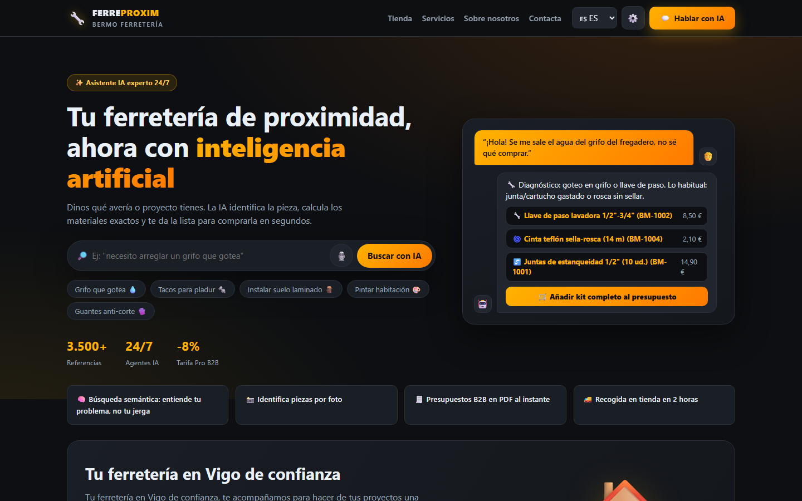

“Grifo que gotea”, “colgar un estante”, “pintar una habitación”: lista exacta de materiales y alternativas.
Pintura, tornillería, césped y más: litros, unidades y coste estimado con IVA.
Para obras y profesionales: cantidades, precios, IVA y plazo en un presupuesto listo para enviar.
Atención a vecinos y clientes extranjeros en su idioma, también por voz.
Asistente en vuestra web y WhatsApp, catálogo y calculadoras con vuestros precios. Éxito medido: 50 conversaciones, 10 presupuestos y 3 pedidos en 30 días. Si no se cumple, se amplía sin coste.
| Min | Escena | Qué decimos / mostramos |
|---|---|---|
| 1–3 | Mostrador | “Tengo un grifo que gotea, ¿qué necesito?” → lista exacta: cartucho 35/40/45 mm, juntas, PTFE, herramientas. |
| 4–5 | Identificación | Foto o descripción de una pieza → referencia y compatibilidades (función beta: mostrar solo si está validada). |
| 6–7 | Calculadora | “Pintura para 4×3 m” → litros, botes y coste. |
| 8–9 | Presupuesto B2B | 20 cajas + 10 kg → presupuesto con IVA y plazo, listo para enviar. |
| 10 | Idiomas | Cliente extranjero: EN/GL. |
| 11–12 | Cierre | Piloto 30 días, condiciones y siguiente paso. |
1) Demo de 15 min. 2) Carga de catálogo y precios en 48 h. 3) Piloto de 30 días con métricas semanales.